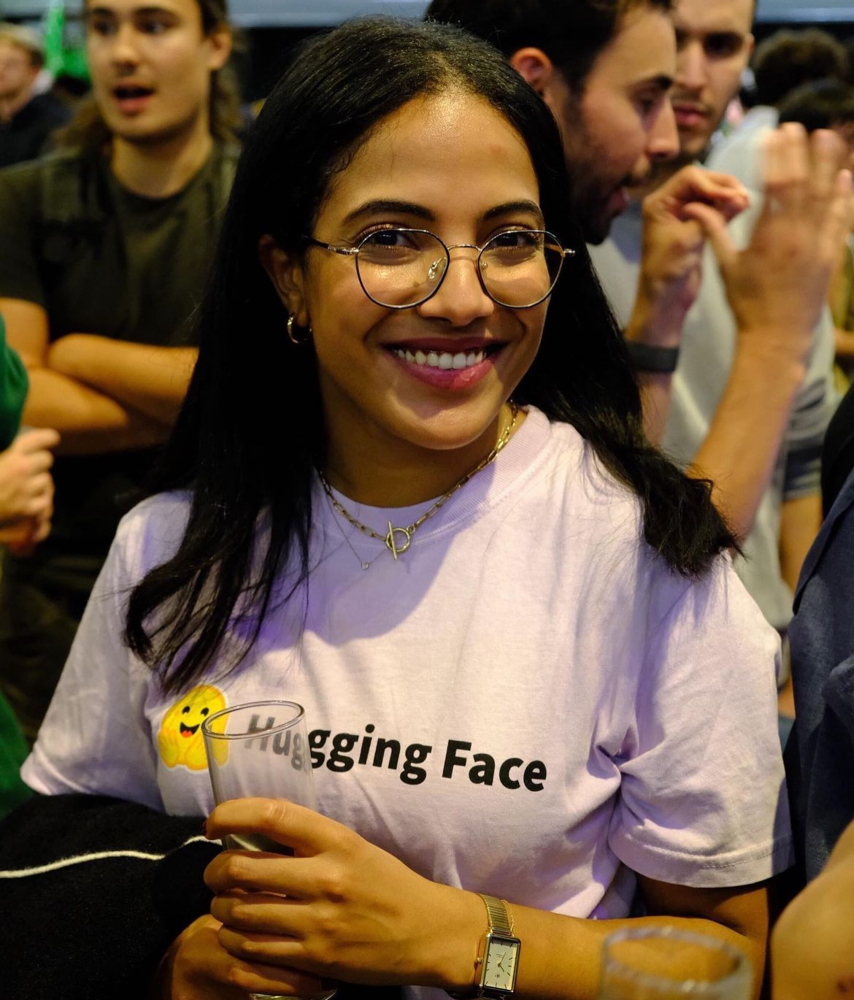

Loubna Ben Allal
loubnabenallalcontact@gmail.com
Welcome to my personal page! 🌸 I'm Loubna, a Machine Learning Engineer at Hugging Face. I lead efforts on training small Language Models (SmolLM & SmolLM2) and building pre-training datasets like Cosmopedia and FineWeb-Edu.
Previously, I was a member of the core team behind BigCode, where I worked on The Stack dataset,
the largest open dataset of source code, as well as the StarCoder and StarCoder2 family of models.
I hold the MVA master's degree from ENS Paris Saclay (Paris, France) and an engineering degree from École des Mines de Nancy, with a major in Mathematics (Nancy, France).
I'm based in Paris, but I grew up in Morocco, in a small town called Midelt.
Publications
- BLOOM: A 176B-Parameter Open-Access Multilingual Language Model.NeurIPS 2022 - Arxiv.
- The Stack: 3 TB of permissively licensed source code. TMLR - Arxiv.
- SantaCoder: Don't reach for the stars. ICLR 2022, Best Paper Award at DL4C Workshop - Arxiv.
- StarCoder: May The Source Be With You. TMLR - Arxiv.
- StarCoder 2 and The Stack v2: The Next Generation. Arxiv.
- Scaling Laws and Compute-Optimal Training Beyond Fixed Training Durations. Arxiv.
- The FineWeb Datasets: Decanting the Web for the Finest Text Data at Scale. Arxiv.
The full list is available in my Google Scholar Page.
Talks
- November 7th, 2024, podcast about "Code Generation & Synthetic Data" at AI Stories.
- September 24th, 2024, online Keynote about "The age of synthetic data and small LLMs" at NLP Summit 2024. Slides.
- July 16th, 2024, interview with VentureBeat. Hugging Face’s SmolLM models bring powerful AI to your phone, no cloud required.
- May 23rd, 2024, online talk about "Behind the Scenes of LLM Pre-training" at Stanford CS25: Transformers United class. Youtube Recording - Slides.
- April 20th, 2024, in-person Keynote about "Open development of Large Language Models for code with BigCode and StarCoder2" at LLM4Code workshop at ICSE 2024. Slides.
- April 9th, 2024, in-person talk about "The landscape of LLMs for Code and their adaptation to custom codebases" at Qcon London. Slides.
- April 4th, 2024, in-person talk about "Overview of BigCode and the landscape of LLMs for Code" at Station F. Slides.
- February 12th, 2024, in-person talk about "Generative AI: LLMs & Beyond" at Sciences Po Slides.
- October 16th, 2023, talk about Introduction to Machine Leaning for High School students (in French) at Teens in AI. Slides.
- November 24th, 2023, online talk at Al Akhawayn University. Slides.
- September 28th, 2023, in-person Keynote to 1500+ attendeed at KubeCon + CloudNativeCon + Open Source Summit China 2023. Youtube Recording - Slides.
- September 26th, 2023, in-person talk about Open and Responsible development of Code Models at GOSIM Conference in Shanghai, China. Youtube Recording.
- September 23rd, 2023, in-person talk about Building LLMs for Code at GOSIM Workshop in Shanghai, China. Youtube Recording - Slides.
- September 9th, 2023, in-person talk at DataFest Yerevan in Yerevan, Armenia. Youtube Recording - Slides.
- August 17th, 2023, webinar to Analytics Vidhya. Slides.
- June 21th, 2023, online presentation about StarCoder to Emirates Data Science department.
- May 16th, 2023,webinar about StarCoder to MLOPS Learners. Youtube Recording
- May 5th, 2023, online presentation about SantaCoder paper at the Deep Learning For Code Workshop at ICLR.
- Febrary 22nd, 2023, webinar about BigCode Project and Code LLMs to MoroccoAI.Youtube Recording.
- February 9th, 2023, online talk about The Stack & Code LLMs fine-tuning at the department of innovation of the European Parliament.
- December 19th 2022, online talk about CodeParrot at a research seminar in KTH Royal Institute of Technology in Stockholm.